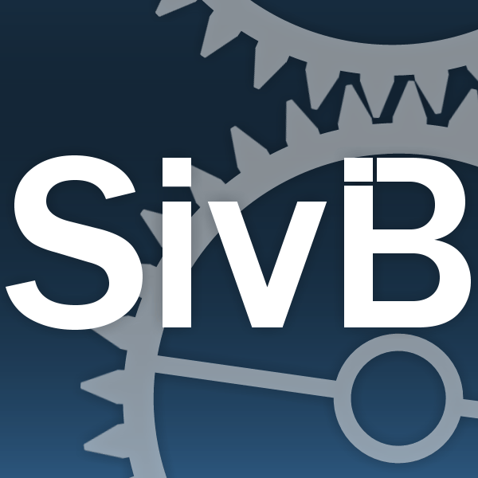
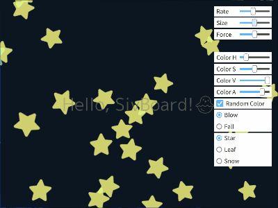
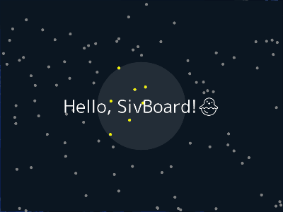
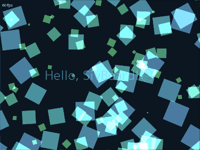

SivBoard
写真、イラスト、文章を自在にレイアウト。プログラミングやアートを手軽に楽しむツール

インストールは不要。任意の場所に置くだけで使えます。さらにドラッグ&ドロップに対応し、使いやすくなりました。
画像やテキストを組み合わせたサムネイル画像や、スクリプトコードを使ったアニメーションが簡単に作れます。
Download
SivBoard ver. 2.50.2 : Windows 64bit (based on OpenSiv3D 0.6.15)
void Main()
{
Font font(60);
while (System::Update())
{
font("Hello, SivBoard!").drawAt(Scene::Center(), Palette::White);
}
}
Demonstration


アニメーションのデモです。
最新のSivBoardはドラッグ&ドロップで画像やテキスト、フォントを読み込めます。

GIFや画像ZIP、改行を挟んだTXTを読み込むとステップが設定でき、スクリプトでアニメーションを作成できます。

SimpleGUI を使ったデモです。
スライダーやボタンで各種パラメータをリアルタイムに設定できます。

SivBoard専用の関数で、スクリプトを終了したり、他のスクリプトに遷移できます。詳細はHelpのSivB::を参照してください。

Grid を使ったデモです。
ブロックの種類や色、配置はメインループの中でランダムに決定されています。

読み込み後にF12を押すと画面をキャプチャします。SivBoardと同じ場所にScreenshotというフォルダが作られます。

当たり判定のデモです。
グレーの円はマウスで動かすことができます。円の中の点は黄色にしています。

F9を押すとタイトルバーにステータスが表示されます。マウスカーソルの位置や実行後の経過時間などを確認できます。

ParticleSystem2D を使ったデモです。
SivBoard起動後にF5を押してファイルを読み込んでみてください。

読み込み後にF5を押すとファイルがリロードされます。それ以外にファイルを更新した場合もリロードされます。